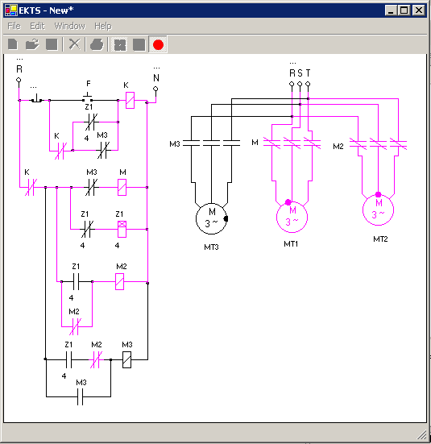
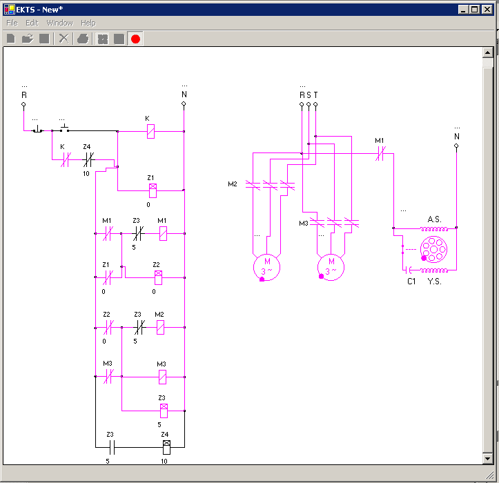

Design command and motor circuits to run 3 units of 3 phase induction motors as specified below:
This circuit is designed as shown in Figure 14.

Figure 15 3 units of 3 phase motor circuit designed with EKTS.
In this circuit “Z1” time relay is used to send pulse in every 5 second. “M1”, “M2” and “M3” relays are used to control 3 phase motors relatively. This relays are controlled by control circuit.
Design command and motor circuits to run two units of 3 phase and one unit 1 phase motors as specified below.
This circuit is designed as shown in Figure 15.

Figure 16 Circuit of one 1 phase and two 3 phase motors designed with EKTS.
In this circuit “M1”, “M2” and “M3” relays used to control three motors. Control of this relays is done in command circuit.